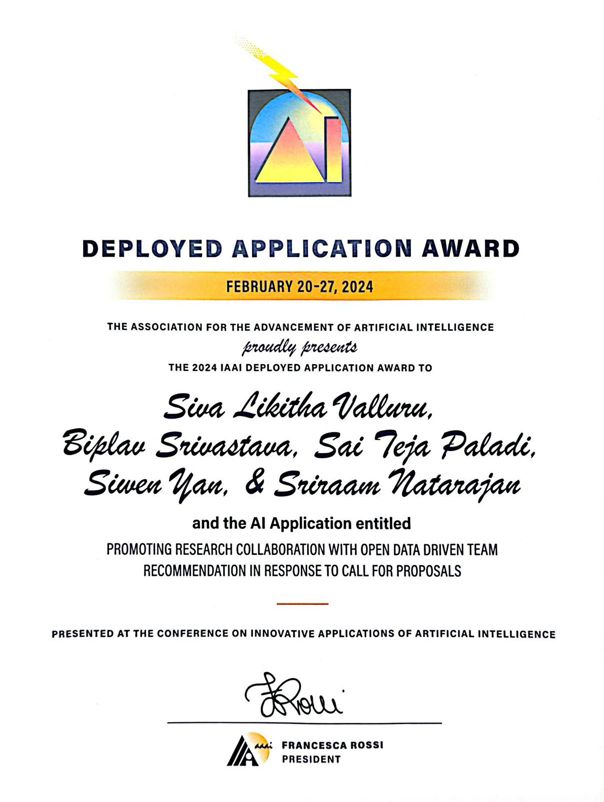
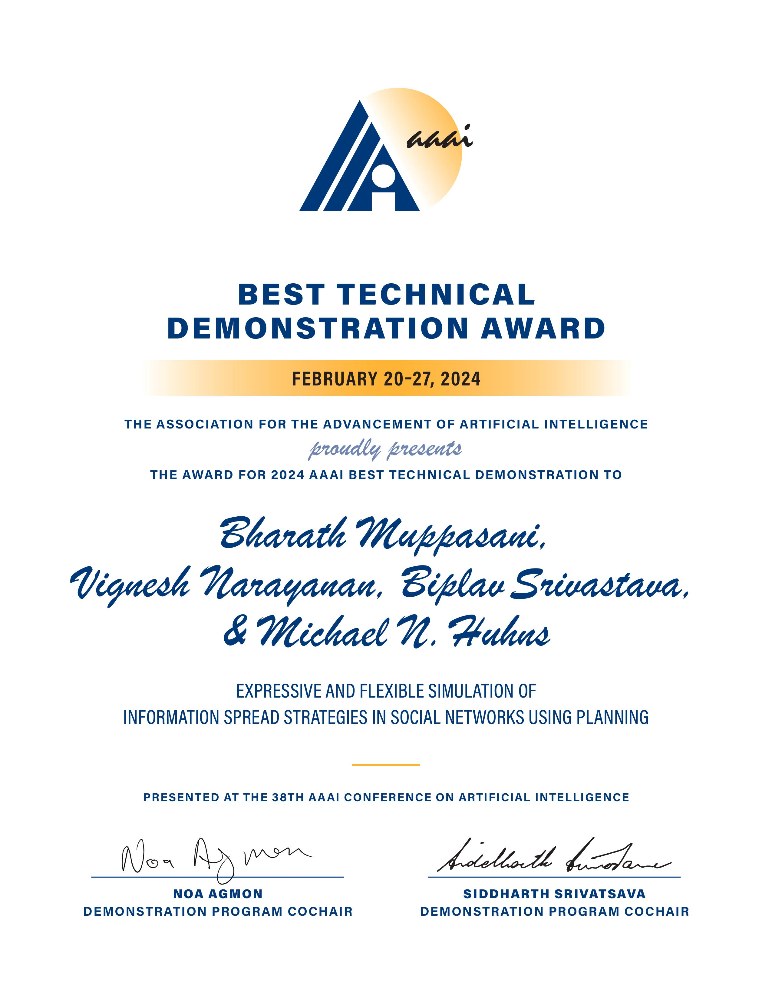

-
2024 IAAI Deployed Application Award
In February 2024, our paper titled 'Promoting Research Collaboration with Open Data Driven Team Recommendation in Response to Call for Proposals' authored by Siva Likitha Valluru, Biplav Srivastava, Sai Teja Paladi, Siwen Yan, and Sriraam Natarajan has been honored with the 2024 IAAI Deployed Application Award at AAAI 2024 conference by the Association for the Advancement of Artificial Intelligence (AAAI). More info can be found here.

Promoting Research Collaboration with Open Data Driven Team Recommendation in Response to Call for Proposals 🎉"> -
Best Technical Demonstration Award
In February 2024, our paper titled 'Expressive and Flexible Simulation of Information Spread Strategies in Social Networks Using Planning' authored by Bharath Muppasani, Vignesh Narayanan, Biplav Srivastava, and Michael N. Huhns, has been honored with the Best Technical Demonstration Award at the 2024 AAAI Conference by the Association for the Advancement of Artificial Intelligence (AAAI). More info can be found here.

-
Best Graduate Student Poster Presentation Award
In April 2023, Kausik Lakkaraju was honored with the Best Graduate Student Poster Presentation Award at the Discover USC event, a university-wide showcase at the University of South Carolina for his work on 'Rating of AI Systems through a Causal Lens'. More info can be found here.

Recognitions
- In July 2024, Biplav Srivastava joined the Advisory Board of TechInLaw, a technology, innovation, and law collaborative at the University of South Carolina.
- In February 2024, Vishal Pallagani got elected to the Student Committee of AAAI - the International Association for the Advancement of Artificial Intelligence.
- In February 2024, we started in lead PI role University of South Carolina's participation in National Institute of Standards and Technology (NIST)'s Artificial Intelligence Safety Institute Consortium (AISIC) where we are contributing to many task groups [announcement, members].